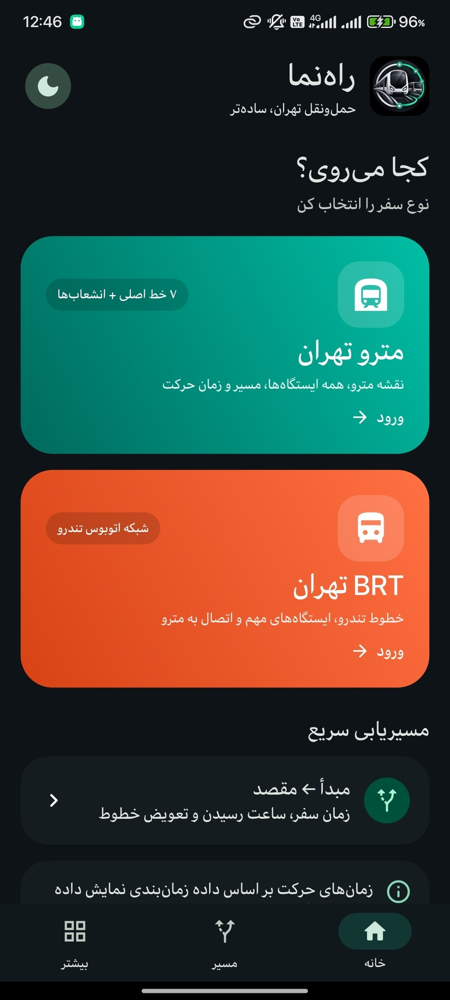
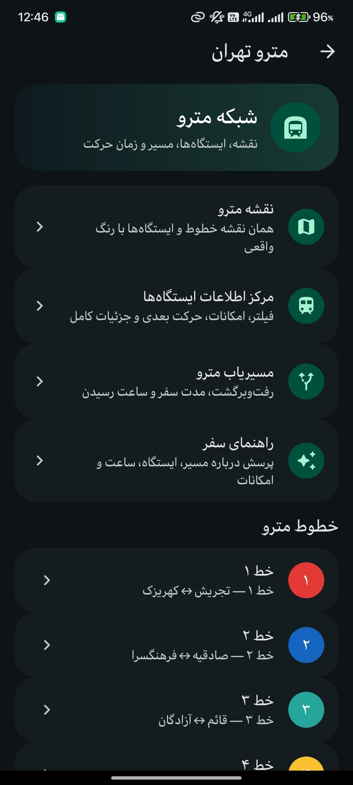
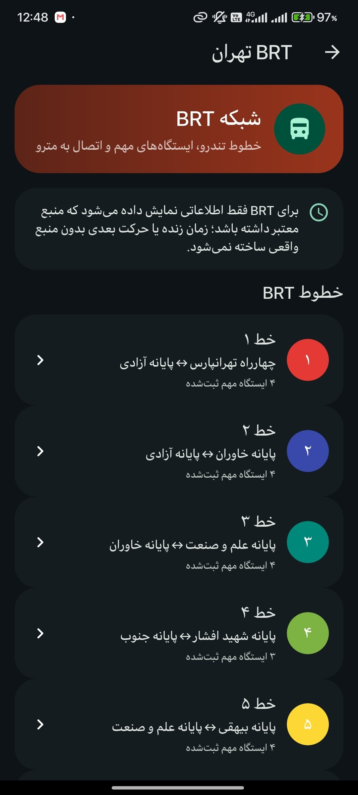
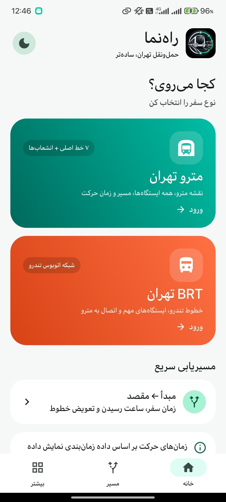
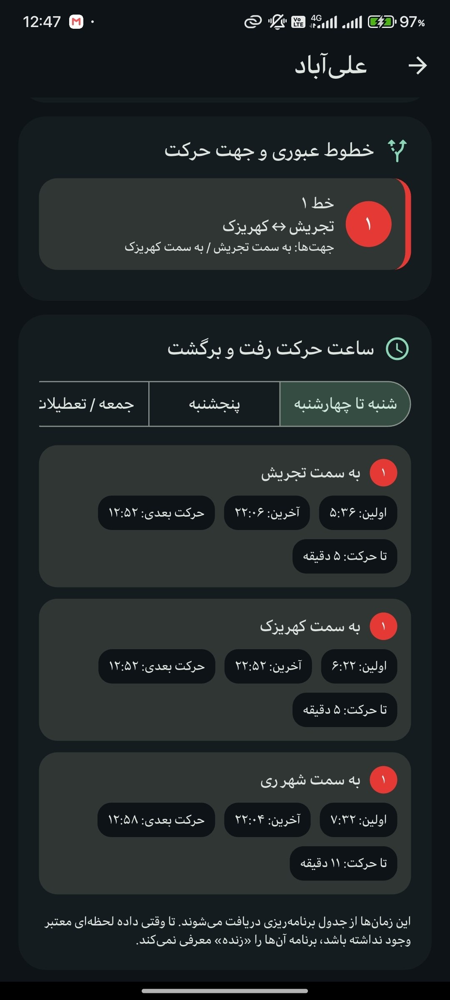

🚉
مرکز اطلاعات ایستگاه
خط، جهت حرکت، امکانات، تقاطعها و جزئیات هر ایستگاه.
راهنما برای رفتوآمد شهری تهران ساخته شده؛ خطوط مترو و BRT، ایستگاهها، زمان حرکت، مسیریابی و راهنمای هوشمند را در یک رابط فارسی و خلوت کنار هم میآورد.

اطلاعات مهم مسیر بدون شلوغی و منوی اضافه، مستقیم جلوی چشم قرار میگیرد.
خط، جهت حرکت، امکانات، تقاطعها و جزئیات هر ایستگاه.
انتخاب جهت حرکت و مشاهده ترتیب واقعی ایستگاهها.
اولین، آخرین و حرکت بعدی بر اساس داده زمانبندی.
نمایش خطوط و ایستگاهها با رنگبندی مشخص و قابل فهم.
تعویض خط و مسیرهای جایگزین در یک نگاه.
پرسش طبیعی درباره مسیر، ایستگاه، زمان و امکانات بر اساس دادههای راهنما.
هر شبکه بخش مستقل خودش را دارد تا مسیرها واضح و قابل دنبال کردن بمانند.
هر خط با رنگ خودش، ایستگاهها به ترتیب و جهت حرکت مشخص.
مبدأ، مقصد و ایستگاههای مهم BRT در بخش جداگانه.
میتوانی درباره مسیر، ساعت حرکت، تعویض خط و ایستگاهها سوال کنی. پاسخها بر اساس دادههای خود راهنما ساخته میشوند.
تصاویر واقعی از رابط راهنما، در حالت روشن و تاریک.



خانه — روشن
جزئیات و زمانبندیخطوط مترو و BRT تهران، اطلاعات ایستگاهها، جهت حرکت، زمانبندی و امکانات مسیریابی را نمایش میدهد.
کاربر سوال طبیعی میپرسد و پاسخ بر اساس دادههای خود برنامه ارائه میشود؛ زمان یا مسیر ساختگی نمایش داده نمیشود.
بله، هر شبکه بخش مستقل دارد اما نقاط اتصال آنها قابل مشاهده است.
دکمه دانلود به آخرین Release رسمی اپ متصل است.
نسخه اندروید راهنما را دانلود کن؛ با دسترسی سریع به مترو، BRT، ایستگاهها، زمان حرکت و راهنمای هوشمند.